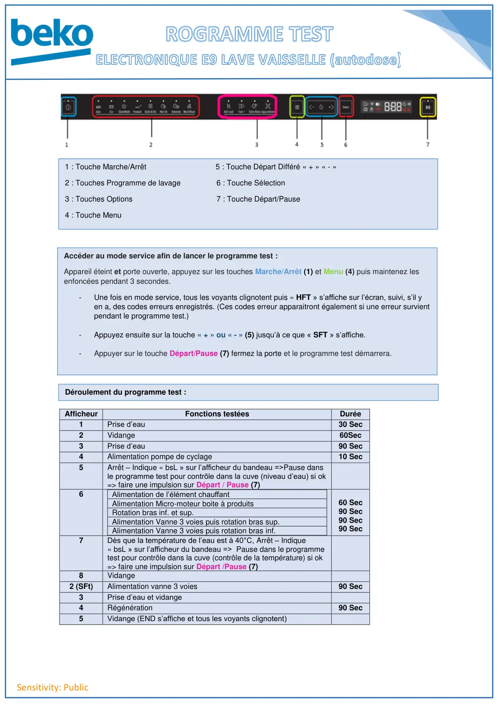
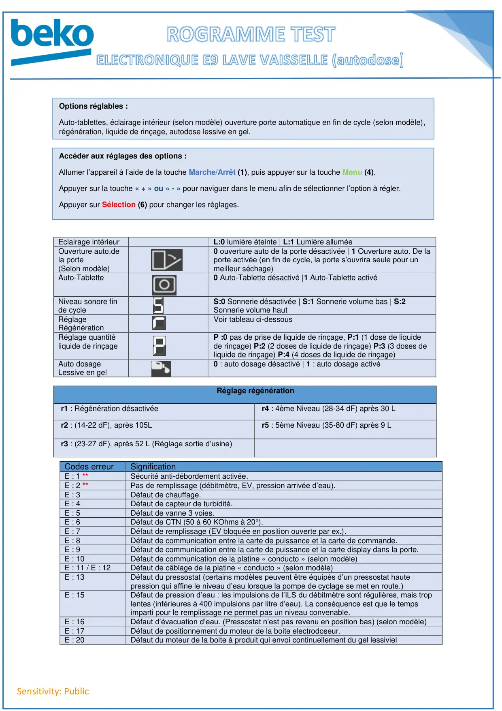

Progr Test lave vaisselle AutoDose Electronique E9

Sensitivity: PublicAfficheurFonctions testéesDurée1Prise d’eau30 Sec2Vidange60Sec3Prise d’eau90 Sec4Alimentation pompe de cyclage10 Sec5Arrêt – Indique « bsL » sur l’afficheur du bandeau =>Pause dansle programme test pour contrôle dans la cuve (niveau d’eau) si ok=> faire une impulsion sur Départ / Pause (7)6Alimentation de l’élément chauffantAlimentation Micro-moteur boite à produitsRotation bras inf. et sup.Alimentation Vanne 3 voies puis rotation bras sup.Alimentation Vanne 3 voies puis rotation bras inf.60 Sec90 Sec90 Sec90 Sec7Dès que la température de l’eau est à 40°C, Arrêt – Indique« bsL » sur l’afficheur du bandeau => Pause dans le programmetest pour contrôle dans la cuve (contrôle de la température) si ok=> faire une impulsion sur Départ /Pause (7)8Vidange2 (SFt)Alimentation vanne 3 voies90 Sec3Prise d’eau et vidange4Régénération90 Sec5Vidange (END s’affiche et tous les voyants clignotent)Accéder au mode service afin de lancer le programme test :Appareil éteint et porte ouverte, appuyez sur les touches Marche/Arrêt (1) et Menu (4) puis maintenez lesenfoncées pendant 3 secondes.-Une fois en mode service, tous les voyants clignotent puis « HFT » s’affiche sur l’écran, suivi, s’il yen a, des codes erreurs enregistrés. (Ces codes erreur apparaitront également si une erreur survientpendant le programme test.)-Appuyez ensuite sur la touche « + » ou « - » (5) jusqu’à ce que « SFT » s’affiche.-Appuyer sur le touche Départ/Pause (7) fermez la porte et le programme test démarrera.Déroulement du programme test :1 : Touche Marche/Arrêt 5 : Touche Départ Différé « + » « - »2 : Touches Programme de lavage 6 : Touche Sélection3 : Touches Options 7 : Touche Départ/Pause4 : Touche Menu
1 / 3
Sensitivity: PublicEclairage intérieurL:0 lumière éteinte | L:1 Lumière alluméeOuverture auto.dela porte(Selon modèle)0 ouverture auto de la porte désactivée | 1 Ouverture auto. De laporte activée (en fin de cycle, la porte s’ouvrira seule pour unmeilleur séchage)Auto-Tablette0 Auto-Tablette désactivé |1 Auto-Tablette activéNiveau sonore finde cycleS:0 Sonnerie désactivée | S:1 Sonnerie volume bas | S:2Sonnerie volume hautRéglageRégénérationVoir tableau ci-dessousRéglage quantitéliquide de rinçageP :0 pas de prise de liquide de rinçage, P:1 (1 dose de liquidede rinçage) P:2 (2 doses de liquide de rinçage) P:3 (3 doses deliquide de rinçage) P:4 (4 doses de liquide de rinçage)Auto dosageLessive en gel0 : auto dosage désactivé | 1 : auto dosage activéRéglage régénérationr1 : Régénération désactivéer4 : 4ème Niveau (28-34 dF) après 30 Lr2 : (14-22 dF), après 105Lr5 : 5ème Niveau (35-80 dF) après 9 Lr3 : (23-27 dF), après 52 L (Réglage sortie d’usine)Codes erreurSignificationE : 1 **Sécurité anti-débordement activée.E : 2 **Pas de remplissage (débitmètre, EV, pression arrivée d’eau).E : 3Défaut de chauffage.E : 4Défaut de capteur de turbidité.E : 5Défaut de vanne 3 voies.E : 6Défaut de CTN (50 à 60 KOhms à 20°).E : 7Défaut de remplissage (EV bloquée en position ouverte par ex.).E : 8Défaut de communication entre la carte de puissance et la carte de commande.E : 9Défaut de communication entre la carte de puissance et la carte display dans la porte.E : 10Défaut de communication de la platine « conducto » (selon modèle)E : 11 / E : 12Défaut de câblage de la platine « conducto » (selon modèle)E : 13Défaut du pressostat (certains modèles peuvent être équipés d’un pressostat hautepression qui affine le niveau d’eau lorsque la pompe de cyclage se met en route.)E : 15Défaut de pression d’eau : les impulsions de l’ILS du débitmètre sont régulières, mais troplentes (inférieures à 400 impulsions par litre d’eau). La conséquence est que le tempsimparti pour le remplissage ne permet pas un niveau convenable.E : 16Défaut d’évacuation d’eau. (Pressostat n’est pas revenu en position bas) (selon modèle)E : 17Défaut de positionnement du moteur de la boite electrodoseur.E : 20Défaut du moteur de la boite à produit qui envoi continuellement du gel lessivielOptions réglables :Auto-tablettes, éclairage intérieur (selon modèle) ouverture porte automatique en fin de cycle (selon modèle),régénération, liquide de rinçage, autodose lessive en gel.Accéder aux réglages des options :Allumer l’appareil à l’aide de la touche Marche/Arrêt (1), puis appuyer sur la touche Menu (4).Appuyer sur la touche « + » ou « - » pour naviguer dans le menu afin de sélectionner l’option à régler.Appuyer sur Sélection (6) pour changer les réglages.
2 / 3Sensitivity: Public
3 / 3